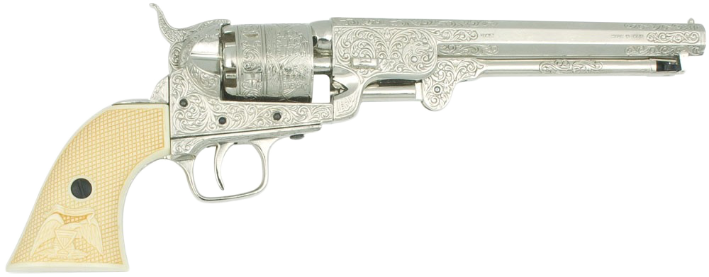

Револьверы
Револьве́р — многозарядное огнестрельное оружие ближнего боя, механизм питания патронами которого выполнен в виде вращающегося цилиндра (барабана), в каморах которого находятся патроны, при этом, в момент выстрела, ствол является продолжением очередной каморы.
| Название | Патрон | Повр | Точ | Далн | Вес | Сс | Бзс | СЛ | Разм | Отд | Цена | Кл |
|---|---|---|---|---|---|---|---|---|---|---|---|---|
| Эльфийский шалун | .22 Short | 1к-1 пб- | 2 | 50/550 | 1 | 2 | 7 (5i) | 7 | -1 | 2 | $375 | 4 |
| Трость-ружьё | .32 Long | 2к-1 пб- | 1 | 50/550 | 1,5 | 1 | 1 (10i) | 8† | -4 | 2 | $900 | 1 |
| Револьвер полицейский | .45 Webly | 1к+1 пб+ | 1 | 110/1200 | 1,5 | 1 | 5 (3i) | 9 | -1 | 3 | $1500 | 4 |
| Револьвер кавалерийский | .44 Caplock | 2к+1 пб+ | 2 | 100/1100 | 4,2 | 1 | 5 (10i) | 10 | -3 | 2 | $1500 | 3 |
| Револьвер армейский | .44 Henry | 2к пб+ | 2 | 120/1300 | 2,5 | 1 | 6 (3i) | 10 | -2 | 3 | $2000 | 3 |
| Револьвер армейский офицерский | .44 Henry | 2к-1 пб+ | 2 | 100/1100 | 2,9 | 1 | 6 (3i) | 10 | -3 | 2 | $2000 | 3 |
| Пистолет специальный арм. | .44 Caplock 12G Caplock |
2к-1 пб+ 1к (0,5) пб- |
2 1 |
60/700 30/600 |
3,7 | 1 1x11 |
9 (10i) 1 (15i) |
11 | -3 | 3 1 |
$1250 | 2 |
| Пистолет дуэльный | .45 Flintlock | 1к+2 пб+ | 1 | 70/800 | 2,75 | 1 | 1 (20i) | 9 | -3 | 2 | $500 | 3 |
| Мой друг | .22 Short | 1к пб- | 0 | 25/200 | 0,4 | 1 | 7 (5i) | 7 | -1 | 2 | $500 | 4 |
| Лучший друг приключенца | .38 Long | 2к пб | 1 | 90/1000 | 2,9 | 1 | 6 (3i) | 9 | -2 | 2 | $1375 | 3 |
| Лучший друг орка | .50 Flintlock | 1к+2 пб++ | 1 | 70/800 | 2,3 | 1 | 5 (10i) | 10 | -3 | 3 | $900 | 3 |
| Дамская хитрость | .44 Caplock | 2к-1 пб+ | 1 | 50/550 | 0,4 | 1 | 1 (20i) | 6 | -1 | 3 | $650 | 3 |
| Бандит | .45 Webley | 1к+2 пб+ | 1 | 110/1200 | 1,4 | 2 | 5 (3i) | 9 | -1 | 3 | $1750 | 3 |
Эльфийский шалун, .22 Short
Исторический аналог Hopkins & Allen Defender.
- Повреждения: 1к-1 пб-
- Точность: 2
- Дальность: 50/550
- Вес: 1
- Скорострельность: 2
- Боезапас: 7 (5i)
- Сила: 7
- Размер: -1
- Отдача: 2
- Цена: $375
- Клас Легальности: 4
- Примечания: Поломка 16+
Трость-ружьё, .32 Long
http://www.vokrugsveta.ru/vs/article/3912/
- ТУ: 5
- Повреждения: 2к-1 пб-
- Точность: 1
- Дальность: 50/550
- Вес: 1,5
- Скорострельность: 1
- Боезапас: 1 (10)
- Сила: 8†
- Размер: -4
- Отдача: 2
- Цена: 900
- Клас Легальности: 1
- Примечания:
Револьвер полицейский, .45 Webly
Исторический аналог M.P. Model, .45 Adams
- ТУ: 5
- Повреждения: 1к+1 пб+
- Точность: 1
- Дальность: 110/1200
- Вес: 1,5
- Скорострельность: 1
- Боезапас: 5(3i)
- Сила: 9
- Размер: -1
- Отдача: 3
- Цена: 1750
- Клас Легальности: 4
- Примечания:
Револьвер кавалерийский, .44 Caplock
Исторический аналог Colt M1848 Dragoon
- ТУ: 5
- Повреждения: 2к+1 пб+
- Точность: 2
- Дальность: 100/1100
- Вес: 4,2
- Скорострельность: 1
- Боезапас: 5 (10i)
- Сила: 10
- Размер: -3
- Отдача: 2
- Цена: 1500
- Клас Легальности: 3
- Примечания:
Револьвер армейский, .44 Henry
Исторический аналог Remington New Model Army, .44 Colt
- ТУ: 5
- Повреждения: 2к пб++
- Точность: 2
- Дальность: 120/1300
- Вес: 2,5
- Скорострельность: 1
- Боезапас: 6 (3i)
- Сила: 10
- Размер: -2
- Отдача: 3
- Цена: 2750
- Клас Легальности: 3
- Примечания:
Револьвер армейский офицерский, .44 Henry
Исторический аналог S&W Number 3 Russian
- ТУ: 5
- Повреждения: 2к-1 пб+
- Точность: 2
- Дальность: 100/1100
- Вес: 2,9
- Скорострельность: 1
- Боезапас: 6(3i)
- Сила: 10
- Размер: -3
- Отдача: 3
- Цена: 2000
- Клас Легальности: 3
- Примечания:
Пистолет специальный армейский, .44 Caplock
Исторический аналог Girard LeMat
- ТУ: 5
- Повреждения: 2к-1 пб+ / 1к (0,5) пб-
- Точность: 2/1
- Дальность: 60/700 // 30/600
- Вес: 3,7
- Скорострельность: 1 / 1x11
- Боезапас: 9(10i) / 1(15i)
- Сила: 11
- Размер: -3
- Отдача: 3/1
- Цена: 1,250
- Клас Легальности: 2
- Примечания:
Пистолет дуэльный, .45 Flintlock
Исторический аналог Wogdon Dueller
- ТУ: 5
- Повреждения: 1к+2 пб+
- Точность: 1
- Дальность: 70/800
- Вес: 2,75
- Скорострельность: 1
- Боезапас: 1(20i)
- Сила: 9
- Размер: -3
- Отдача: 2
- Цена: 500
- Клас Легальности: 3
- Примечания: Malf 16
Мой друг, .22 Short
Исторический аналог “My Friend” Knuckle-Duster Revolver
- ТУ: 5
- Повреждения: 1к пб-
- Точность: 0
- Дальность: 25/200
- Вес: 0,4
- Скорострельность: 1
- Боезапас: 7(5i)
- Сила: 7
- Размер: -1
- Отдача: 2
- Цена: 800
- Клас Легальности: 4
- Примечания: Malf 16
Лучший друг приключенца, .38 Long
Исторический аналог Colt M1851 Navy

- ТУ: 5
- Повреждения: 2к пб
- Точность: 1
- Дальность: 90/1000
- Вес: 2,9
- Скорострельность: 1
- Боезапас: 6(3i)
- Сила: 9
- Размер: -2
- Отдача: 2
- Цена: 1375
- Клас Легальности: 3
- Примечания:
Лучший друг орка, .50 Flintlock
Исторический аналог Collier Revolver
https://panzer038.dreamwidth.org/1339909.html
- ТУ: 5
- Повреждения: 1к+2 пб++
- Точность: 1
- Дальность: 70/800
- Вес: 2,3
- Скорострельность: 1
- Боезапас: 5(10i)
- Сила: 10
- Размер: -3
- Отдача: 3
- Цена: 1500
- Клас Легальности: 3
- Примечания: No lanyard ring. Malf 14.
Дамская хитрость, .44 Caplock
Исторический аналог Deringer
- ТУ: 5
- Повреждения: 2к-1 пб+
- Точность: 1
- Дальность: 50/550
- Вес: 0,4
- Скорострельность: 1
- Боезапас: 1(20i)
- Сила: 6
- Размер: -1
- Отдача: 3
- Цена: 650
- Клас Легальности: 4
- Примечания: No lanyard ring. Malf 16.
Бандит, .45 Webley
Исторический аналог Webley British Bulldog Number 2
- ТУ: 5
- Повреждения: 1к+2 пб+
- Точность: 1
- Дальность: 110/1200
- Вес: 1,4
- Скорострельность: 2
- Боезапас: 5(3i)
- Сила: 9
- Размер: -1
- Отдача: 3
- Цена: 1750
- Клас Легальности: 3
- Примечания: No lanyard ring.